Zdjęcia Anny Makuch (1940-60) (43 zdjęcia)
Zdjęcia zostały wykonane przez Annę Mukuch, prawdopodobnie w latach 1940 - 70.
Anna Makuch mieszkała w Zdziarcu i większość zdjęć dotyczy Zdziarca i okolicznych miescowości: Dulczy Wielkiej, Żarówki, Dąbia i Janowca.
Zdjęcia zostały przekazane przez Annę Mucha z d. Balza (dziękujemy!), siostrzenicę Anny Makuch.
Większość zdjęć ma charakter okazjonalny, uwieczniają one dawne uroczytości rodzinne: śluby, pierwsze święte komunie, pogrzeby, spotkania rodzinne.
Zdarzają się też zdjęcia rodzajowe, przedstawiające zabawę przed szkołą, czy też grupy znajomych.
Prosimy o przesyłanie wszelkich informacji na temat rozpoznanych osób na zdjęciach.
Strona główna: zarowianie.org.pl
Kliknij zdjęcie, aby powiększyć widok.
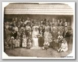
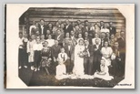
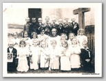
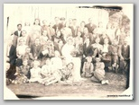
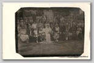
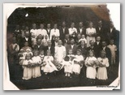
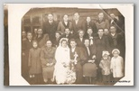
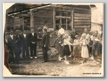
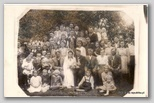
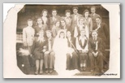
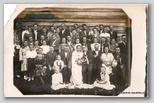
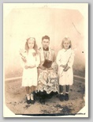
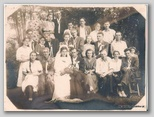
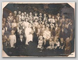
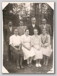
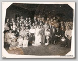
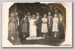
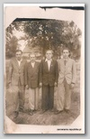
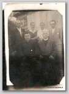
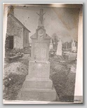
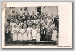
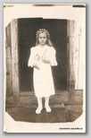
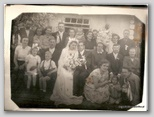
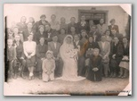
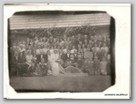
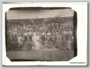
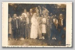
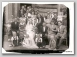
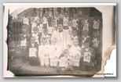
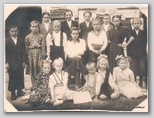
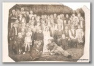
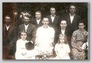
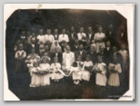
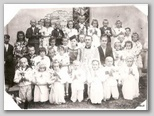
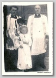
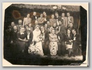
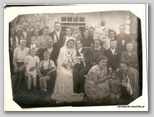
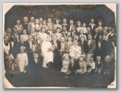
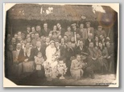
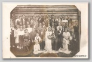